Cloud computing is a model for enabling ubiquitous, convenient, on-demand network access to a shared pool of configurable computing resources (networks, virtual machines, storage, applications, and services) that can be rapidly provisioned and released with minimal management effort or service provider interaction.
Infrastructure as a service (IaaS) refers to online services that abstract the user from the details of infrastructure like physical computing resources, location, data partitioning, scaling, security, backup etc.
Platform as a service (PaaS) or application platform as a service (aPaaS) is a category of cloud computing services that provides a platform allowing customers to develop, run, and manage applications without the complexity of building and maintaining the infrastructure typically associated with developing and launching an app.
SaaS applications are sometimes called Web-based software, on-demand software, or hosted software. Whatever the name, SaaS applications run on a SaaS provider’s servers. The provider manages access to the application, including security, availability, and performance.
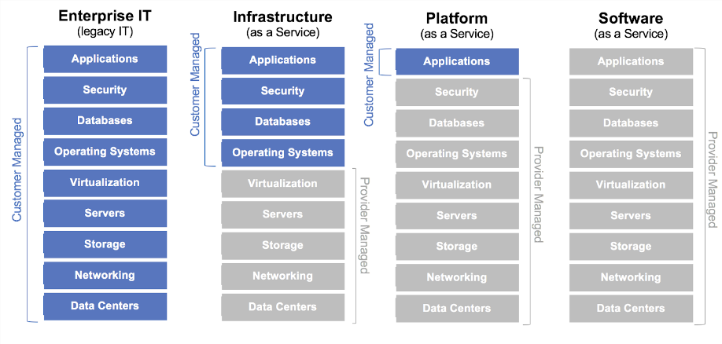
In computing, a virtual machine (VM) is an emulation of a computer system.
A VM virtualizes the hardware and boots a whole OS; a container is an isolated process on the host's kernel.
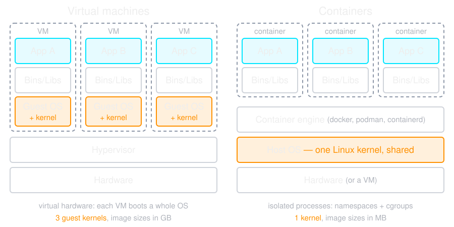
The software that creates and runs VMs. Where it sits gives two types.
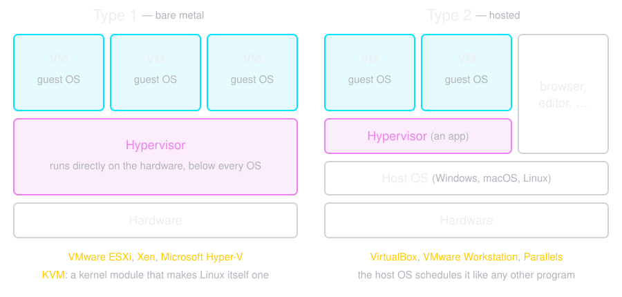
A guest kernel's privileged instructions must reach the hypervisor. There are three ways to get them there.
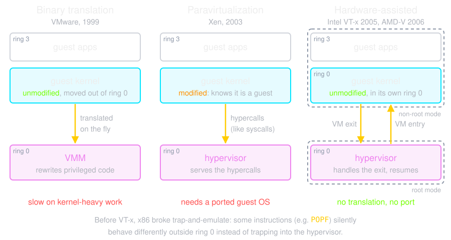
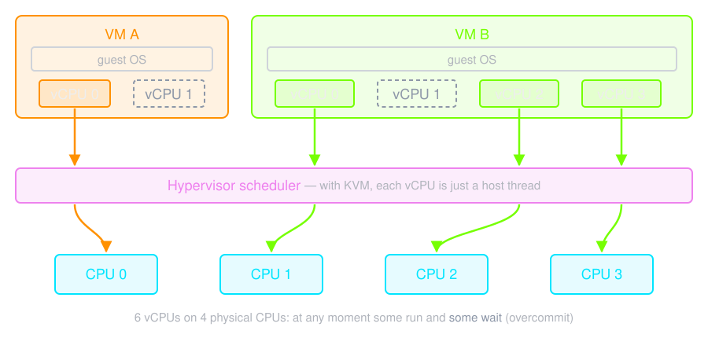
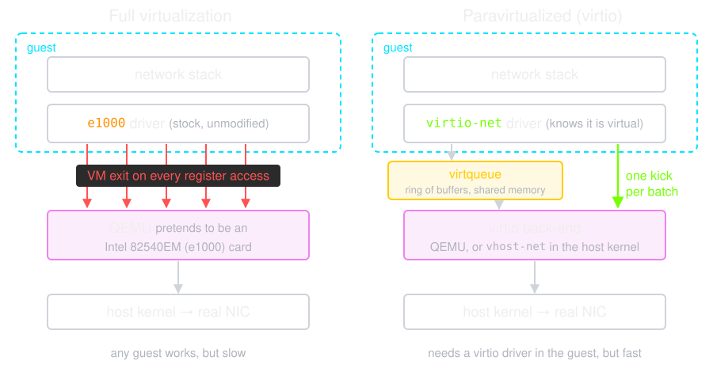
With KVM, QEMU is an ordinary process: each vCPU is a thread that asks the kernel to run guest code, and an I/O thread emulates the devices.
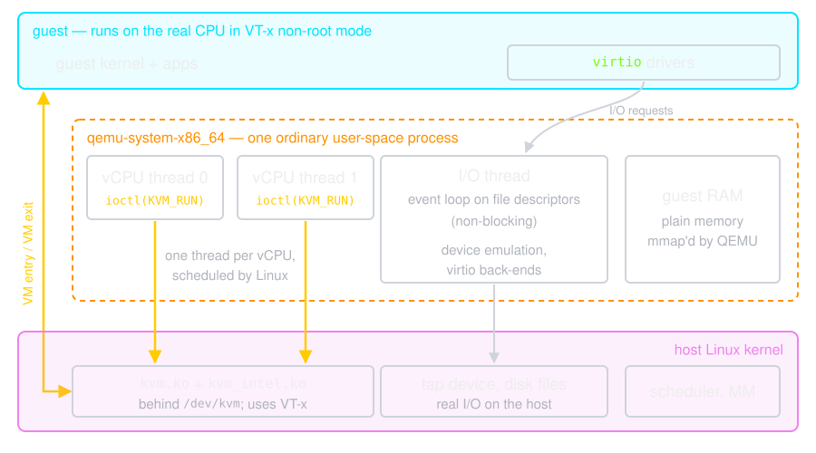
Containers are an abstraction at the app layer that packages code and dependencies together. Multiple containers can run on the same machine and share the OS kernel with other containers, each running as isolated processes in user space.
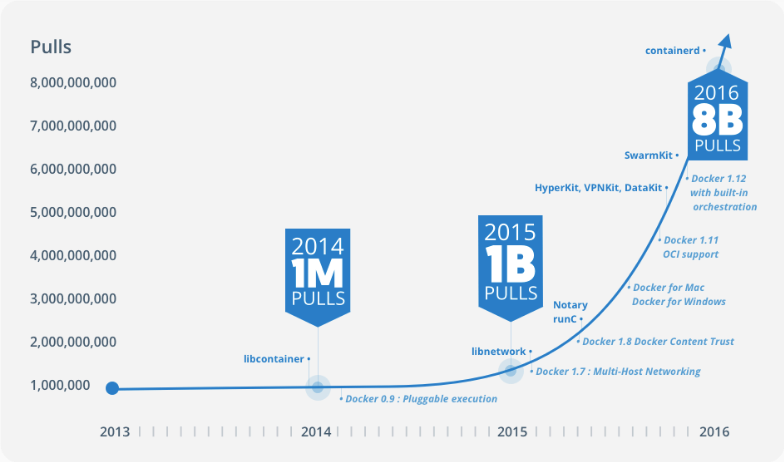
Linux containers are made of three kernel primitives. A namespace controls what a process can see.
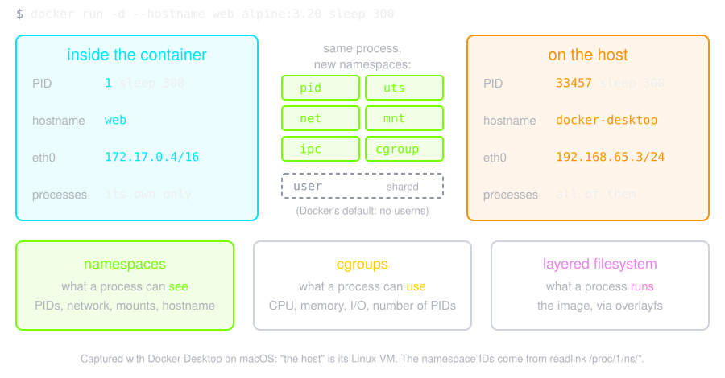
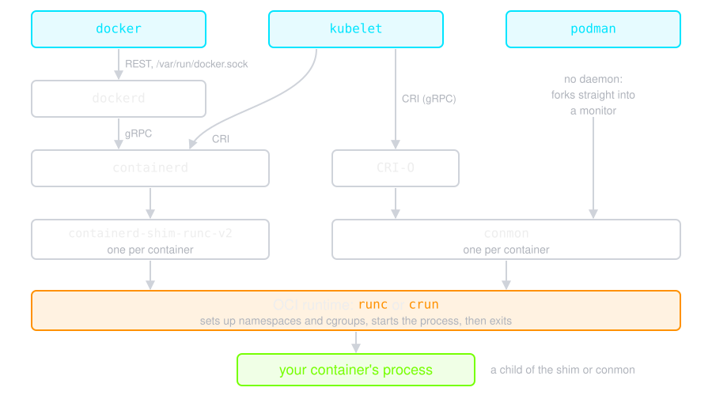
You cannot access docker from Iran
docker run hello-world
An image is a lightweight, stand-alone, executable package that includes everything needed to run a piece of software, including the code, a runtime, libraries, environment variables, and config files.
A container is a runtime instance of an image – what the image becomes in memory when actually executed. It runs completely isolated from the host environment by default, only accessing host files and ports if configured to do so.
A Dockerfile is a text document that contains all the commands a user could call on the command line to assemble an image.
# Format: FROM repository[:version] — pin it, "latest" moves under you
FROM ubuntu:24.04
# One RUN, so the update and the install land in the same layer. Split
# across two layers, a cached update can feed a stale package index.
RUN apt-get update && apt-get install -y --no-install-recommends \
ca-certificates curl gnupg \
&& rm -rf /var/lib/apt/lists/*
# apt-key was removed in Ubuntu 22.04. Keys now live in /etc/apt/keyrings
# and are named by the source that uses them.
RUN curl -fsSL https://pgp.mongodb.com/server-8.0.asc \
| gpg --dearmor -o /etc/apt/keyrings/mongodb.gpg \
&& echo "deb [signed-by=/etc/apt/keyrings/mongodb.gpg] \
https://repo.mongodb.org/apt/ubuntu noble/mongodb-org/8.0 multiverse" \
> /etc/apt/sources.list.d/mongodb-org.list
RUN apt-get update && apt-get install -y --no-install-recommends mongodb-org \
&& rm -rf /var/lib/apt/lists/*
RUN mkdir -p /data/db
# Documents the port; it does not publish it. That is -p at run time.
EXPOSE 27017
ENTRYPOINT ["/usr/bin/mongod"]
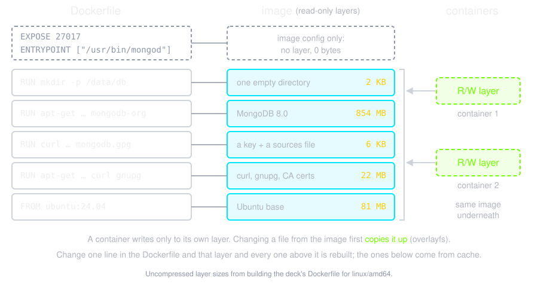
docker build -t friendlyname . # Create image using this directory's Dockerfile
docker run -p 4000:80 friendlyname # Run "friendlyname" mapping port 4000 to 80
docker run -d -p 4000:80 friendlyname # Same thing, but in detached mode
docker ps # See a list of all running containers
docker stop hash # Gracefully stop the specified container
docker ps -a # See a list of all containers, even the ones not running
docker kill hash # Force shutdown of the specified container
docker rm hash # Remove the specified container from this machine
docker rm $(docker ps -a -q) # Remove all containers from this machine
docker images -a # Show all images on this machine
docker rmi imagename # Remove the specified image from this machine
docker rmi $(docker images -q) # Remove all images from this machine
Compose is a tool for defining and running multi-container Docker applications. With Compose, you use a Compose file to configure your application’s services.
services:
db:
image: mysql:8
volumes:
- db_data:/var/lib/mysql
restart: always
environment:
MYSQL_ROOT_PASSWORD: somewordpress
MYSQL_DATABASE: wordpress
MYSQL_USER: wordpress
MYSQL_PASSWORD: wordpress
wordpress:
depends_on:
- db
image: wordpress:latest
ports:
- "8000:80"
restart: always
environment:
WORDPRESS_DB_HOST: db:3306
WORDPRESS_DB_USER: wordpress
WORDPRESS_DB_PASSWORD: wordpress
volumes:
db_data: